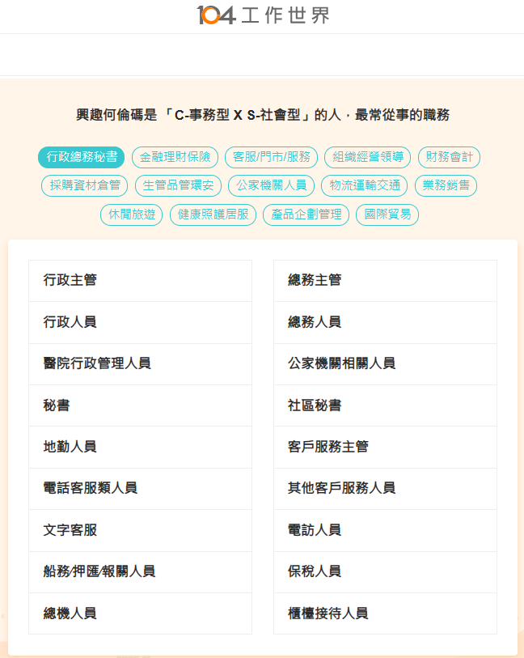
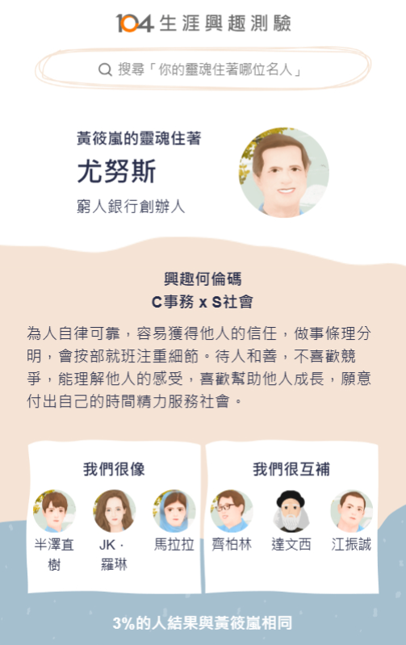

你好，我是 黃筱嵐
資管二A | 411312642
我來自台南市，今年19歲，對資訊相關課程充滿興趣。這作品是我在大二期間為探索技術所製作的自我求職履歷，並以響應式網頁設計呈現，也成為我踏入資訊與管理整合領域的起點。（本作品為資訊管理導論課程成果）
資管二A | 411312642
我來自台南市，今年19歲，對資訊相關課程充滿興趣。這作品是我在大二期間為探索技術所製作的自我求職履歷，並以響應式網頁設計呈現，也成為我踏入資訊與管理整合領域的起點。（本作品為資訊管理導論課程成果）
Management Information System 是一個結合「資訊技術」與「管理科學」的系統，核心目標在於透過資料的循環，支持企業決策、協調與效率提升。
這是 MIS 的基礎建設，確保資訊從無到有、且能被安全使用。
將處理好的資訊精準傳遞給管理者，化數據為行動力。
確保企業像齒輪一樣精準運作，並能即時發現問題。
根據測驗結果，我的特質表現為「為人自律可靠，容易獲得他人的信任」。這份特質使我非常適合細膩且需具備溝通熱忱的 MIS 工作。
做事條理分明，能確保 MIS 工作中伺服器維護與資料備份的精確性。
具備服務熱忱，能耐心引導同事排除技術故障，成為技術與使用者間的橋樑。


根據何倫碼測驗結果（CS：事務型 × 社會型），我具備條理清晰與服務他人的特質。透過學習 Python、Java 及接觸 n8n 自動化工具後，我逐漸對系統管理與問題解決產生興趣，並希望未來能協助企業優化資訊流程、提升運作效率，因此確立朝 MIS 領域發展。
MIS 資訊管理人員負責企業內部資訊系統與網路環境的維護與管理，包含伺服器維運、資料備份、資訊安全控管，以及協助使用者排除問題。同時需與各部門溝通合作，將技術轉化為實際應用，確保系統穩定並提升整體效率。
強化程式能力（Python、Java）與自動化工具 n8n 應用。
建立資訊安全與網路基礎知識。
規劃考取資訊安全 (Security+) 或相關專業證照。
透過專題與實作累積實務經驗，將開發熱忱轉化為營運能量。